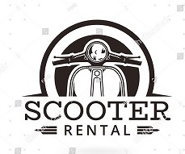
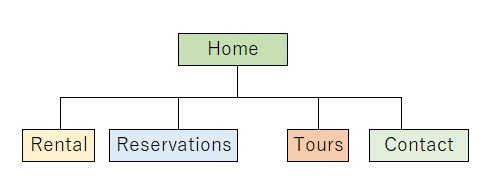

- 1. Home (This page)
Site Name: Scoots Rider Station
Site Purpose:
The 'Scoots Rider Station' is designed to provide service information provided by Soots which is promoting friendly and easy to rent services of motor scooters, jeeps, and side-by-sides ATVs. The company has two shop in the island. The overall goal of the website project is to promote the rental services for those customers that like to do their homework before getting to the island and to provide information about the services, requirements, and rental process. The website reflects the fun and carefree attitude of the island and the ability to escape the touristy western part of the island by exploring the vast coasts and inlets on the southern and eastern shores.
Domain Name: ridescoots.com
Logo:

Site Map:
